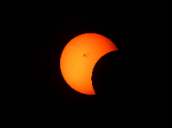

Quick Eclipse Facts To Impress Your Friends
Did you know...?
- This will be the first total eclipse to cross a good part of the US since 1979 and the next one won't take place for another 7 years.
- North America will be witness to some part of the partial eclipse.
- The predicted path of totality for August 21, 2017 will span around 70 miles across.
- Eclipse will start at Lincoln Beach, Oregon at 9:05am P.D.T. with totality beginning at 10:16am P.D.T.
- Over the next 1 and 1/2 hours, eclipse will travel east across 14 states: Oregon, Idaho, Wyoming, Montana, Nebraska, Iowa, Kansas, Missouri, Illnois, Kentucky, Tennessee, Georgia, North Carolina and finally, end in South Carolina at 2:48 pm E.D.T.
- Best location(depending on local bias) for totality that will have the most viewing time, about 2 minutes and 40 seconds, is either Cantonville, Illnois or Hopkinsville, Kentucky.
- Of the 224 total eclipses that are predicted for the 21st Century, only 68 will be total eclipses, and of those only about 8 of them will be in North America.*
- Looking directly at the sun during the eclipse is dangerous for your eyes.
More on eye protection here:Eye Safety
